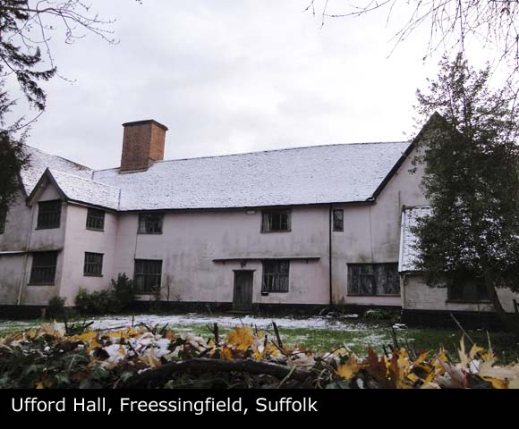

| Name | Full Name | William CLUTTON |
| Forename | William | |
| Surname | CLUTTON | |
| Sex | Male | |
| Birth | 22/07/1675, Yoxford, Suffolk, England | |
| Death | 08/07/1732, Wittingham Hall, Fressingfield, Suffolk, England | |
| Parents | William CLUTTON x Ann GARDINER [Family] | |
| Spouse | Martha ALDOUS b. 03/1670 d. 06/02/1748 [Family] | |
| Children | 1. Henry CLUTTON b. 05/1713 d. 24/04/1790 | |
| Change Date | Date | 15/04/2011 |
| Time | 17:35 | |
William CLUTTON, only child of William CLUTTON and Ann GARDINER [Family], was born on 22/07/1675 in Yoxford, Suffolk, England. William died on 08/07/1732 in Wittingham Hall, Fressingfield, Suffolk, England aged 56. He was christened on 22/07/1675 in Yoxford Parish, Suffolk, England. One son listed. |
| i | Henry CLUTTON was born in 05/1713 in Fressingfield, Suffolk, England. He died on 24/04/1790 in Dennington, Suffolk, England aged about 77. Henry was christened on 20/05/1713. He was a Pear Farmer at Pear Farm of Ufford Hall Farm in Ufford Hall, Fressingfield, Suffolk, England. |  |